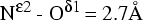

Raster3D to PostScript label conversion
SYNOPSIS
The conversion of Raster3D label records
(object types 10, 11, 12),
into PostScript is performed by the
render program under control of the
-labels command line option.
In this case
render produces two output files: one containing the rendered
image and another containing the PostScript label descriptions.
In earlier versions of Raster3D this function was performed by a
separate program r3dtops, which is now obsolete.
The PostScript file can be converted into a raster image by
ghostscript and then re-combined with the molecular graphics
image to yield a final composite image with both rendered
objects and labels.
This sequence of operations can be done manually, but
is generally done automatically by the
label3d script.
OPTIONS (to the render program)
- -fontscale
- It is problematic to interpret the font sizes requested
in the font descriptor records so that they produce the
desired size on the eventual output device or printer.
By default the r3dtops program assumes that the eventual
output device is approximately 100 dpi. The -fontscale
option allows you to scale this up or down as necessary.
The default scaling is multiplied by the parameter xx.
- -labels [filename]
- Process labels (object types 10,11,12) and create a PostScript output file
in addition to the rendered image.
If no filename is given, the output file is named label3d.ps.
SPECIAL CHARACTERS
A small number of escaped characters are allowed in the label text string.
These may be useful for tweaking the position of your labels:
\n new line
\b backspace
\v vertical tab (move up 1/2 line)
\A Angstrom symbol
TEX-LIKE SYNTAX
Certain conventions from the text-setting program TEX are supported by
the Raster3D label processing code.
In particular the character `_' introduces a subscript, while the
character `^' introduces a superscript.
If more than one character is to be sub- or super-scripted,
the entire string can be enclosed in curly brackets.
Greek characters and other symbols can be referred to by name
if they are prefixed with a backslash.
EXAMPLE
 Example 7 in the Raster3D distribution /examples subdirectory illustrates
the PostScript label processing (see figure at right). Here are the commands
that produced the title:
Example 7 in the Raster3D distribution /examples subdirectory illustrates
the PostScript label processing (see figure at right). Here are the commands
that produced the title:
# Use absolute picture coordinates
15
# First character is big, and uses a fancy font
10
"ZapfChancery-MediumItalic" 20. "Left-align"
#
11
-0.45 0.40 0.0 1.0 1.0 1.0
R
# The remaining characters are smaller, but follow on the same line
10
"Palatino-BoldItalic" 12. "Offset"
11
0.0 0.0 0.0 1.0 1.0 1.0
aster3D now does labels!
#
Here are some examples of TEX-like label syntax:
| label text | appears in final image as |
|---|
| N^{\epsilon2}-O^{\delta1} = 2.7Å |
 |
| 3\sigma [F_o - F_c] |
 |
| data \infty - 2.0\A |
|
Note that the Angstrom symbol may either be entered directly as
'Å' [character 197 (octal 305)] or as the escape sequence '\A'.
BUGS
If a label contains TEX-like escape sequences it is always processed
as "Left-align", since the program doesn't know enough about the
eventual string width to center it properly.
Labels always appear on top of the molecular graphics image,
even labels which should be occluded by a foreground object.
AUTHORS
Ethan A Merritt.
 Back to top
Back to top
 Raster3D homepage
Raster3D homepage